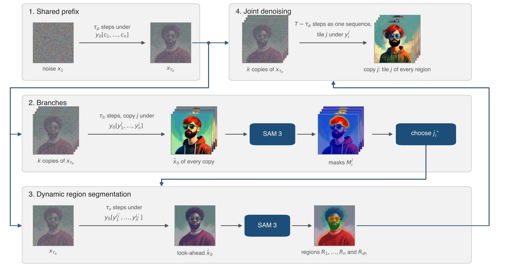

Each picture below is one library. Every two seconds, every picture becomes another random combination of its library's tiles; nothing is regenerated, the tiles are simply swapped.
Pick a library, then click a region of the image to cycle through its tiles, or choose a tile by its prompt on the right.

If you got this far, read the paper for more details!
Read the paper@article{zilber2026mixandmatch,
title = {Mix-and-Match: Generating Globally Coherent Images from Interchangeable Tiles},
author = {Zilber, Shaham and Hazan, Itay and Wolf, Lior},
journal = {arXiv preprint arXiv:XXXX.XXXXX},
year = {2026}
}